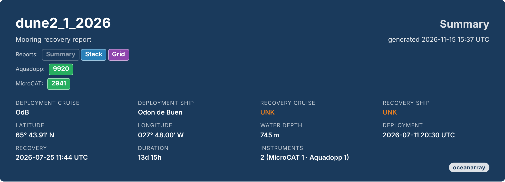

Reports
Every product has an HTML page. A page is one file with every figure inside it:
open it in a browser, offline, with no server. oceanarray run writes them all;
oceanarray report rebuilds them from the files on disk.
Example
These pages were made from dune2_1_2026, a short test mooring:
Summary — start here
and from two deployments of the OSNAP mooring FLMB (2016 and 2017), trimmed to 10 days either side of their overlap:

The top of the summary page. The pills link to the other pages: blue for the stack, purple for the grid, green for each instrument (gray: no page yet).
Where they are
{proc_dir}/{mooring}/report/
├── {mooring}_report.html summary: start here
├── {mooring}_stack_report.html
├── {mooring}_grid_report.html
├── {mooring}_report.pdf with --pdf
└── instrument/{mooring}_{serial}_report.html
A site’s pages (Concatenate Deployments) are in its own folder:
{site}/report/{site}_stackcat_report.html and {site}_gridcat_report.html.
Making them
oceanarray report MOORING --proc-dir $PROC # summary
oceanarray report MOORING --proc-dir $PROC --instruments --stack --grid
oceanarray report MOORING --proc-dir $PROC --instruments --only 16648
oceanarray report MOORING --proc-dir $PROC --all # every page and the PDF
A page reads the stage, stack and grid files; with no stage files its sections are
empty and each instrument row names the folder it searched. The PDF (A4, all pages
in reading order) needs pip install oceanarray[pdf].
What each page shows
Summary — the mooring’s facts (cruises, position, water depth, times, instruments), one row per instrument with a pill per stage file found, the clock corrections, the deployment timing (the trim window against each record’s start and end), and the QC flag counts.
Instrument — the files, the processing history, each variable’s time series colored by QC flag, the first and last days of the record (to check the trim), histograms and the QC thresholds; for current meters also roses, the trajectory, hodographs and speed.
Stack — the instruments deep-first, pressure, temperature, salinity and velocity of every level against time, tilt, instrument spacing, T-S, roses and trajectories.
Grid — the sections in pressure and time, T-S, velocity profiles, roses, stratification and spectra.
Stack cat and Grid cat — the same for a site: every deployment on one axis, the turnarounds shaded; and the gridded sections, their anomalies, each deployment’s median profile and T-S.
Deployments are told apart by color, early to late; with more than seven, colors come in pairs, the second of a pair dashed, hatched or with a square marker. A ▼ above each time axis marks a deployment’s start. On the Stack cat, the T-S diagram outlines the densest half of each instrument level’s values with the level’s median and a line through each deployment’s medians; current speed and direction by depth sit side by side (direction of the mean flow, from daily means; hollow where the flow is not steady), each drawn only at depths with velocity for at least half of a deployment. On the Grid cat, gray lines on the sections and circles on the T-S diagram mark the instruments: between them the grid is interpolated, so where a site’s mooring design changes, part of a difference between deployments is the change in sampling. Isopycnals are labeled with their value; the caption says which are σ0 and which σ2.
Each page ends with its file’s variables and attributes.